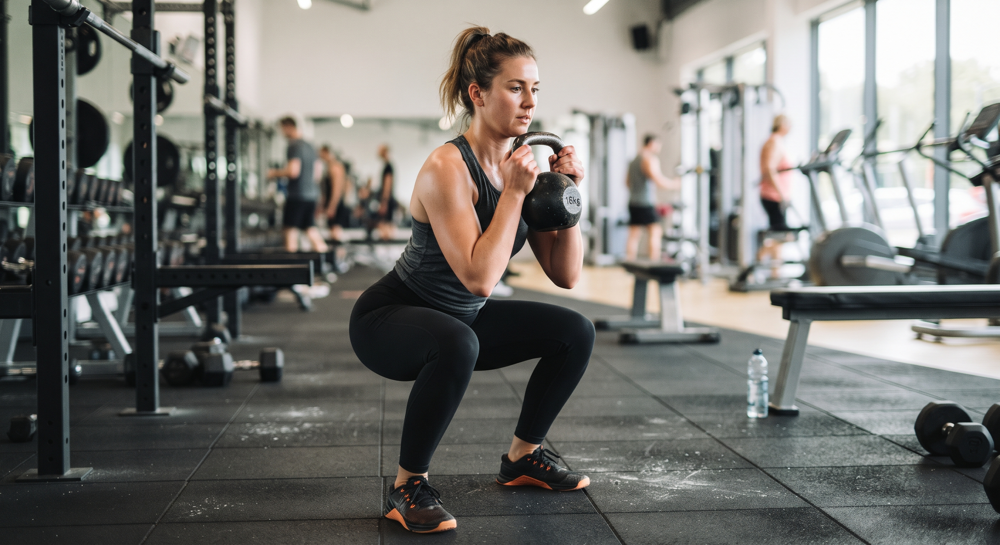

Agachamento Cálice com Halter
3 a 4 séries x 10–12 reps • 60s descansoSegure o halter junto ao peito com os cotovelos para baixo e desça mantendo o tronco estável.
Dica: Faça 1 a 2 séries leves de aquecimento antes da carga principal.